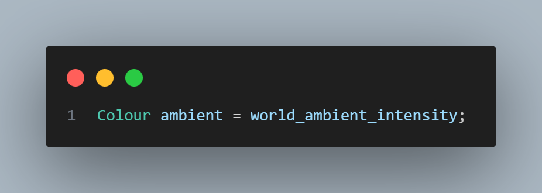
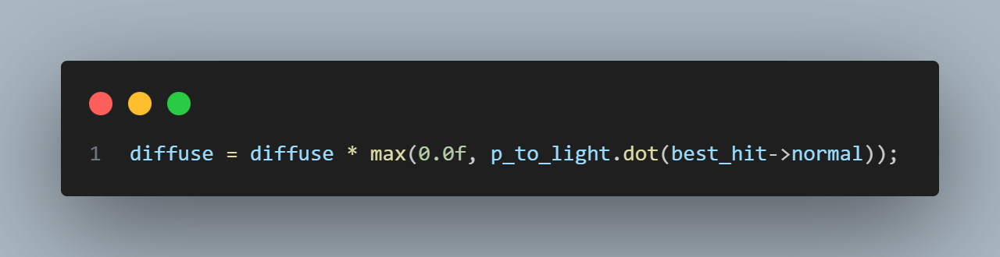
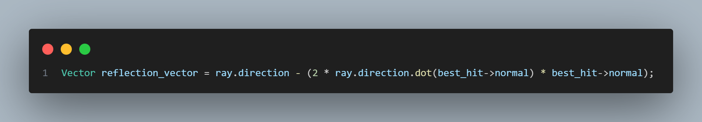
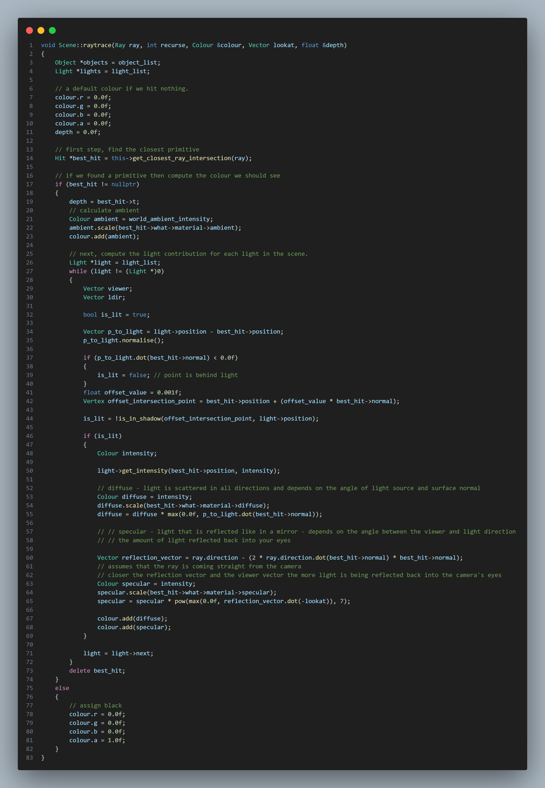
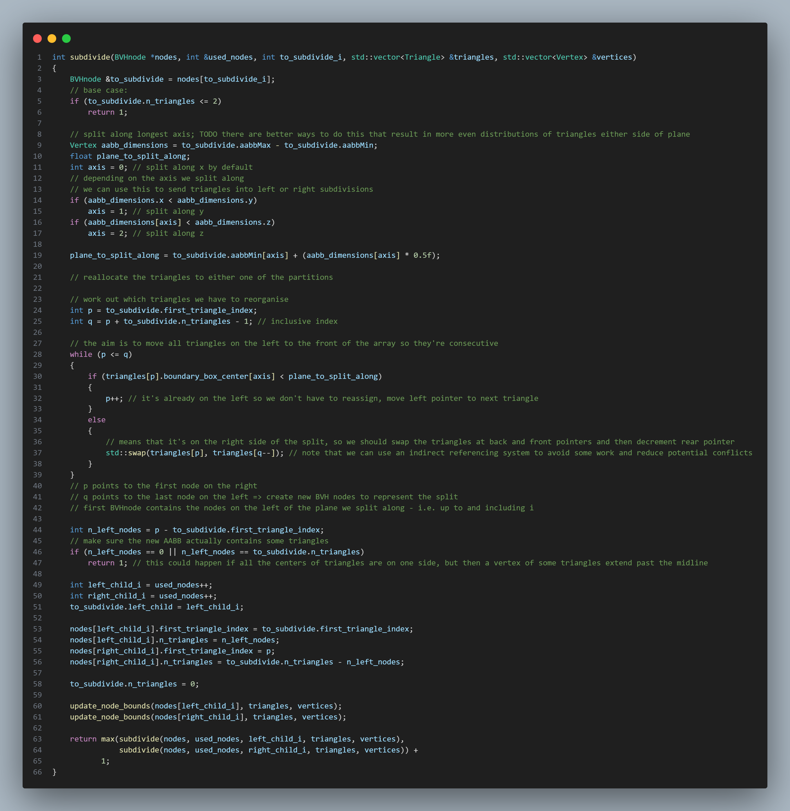
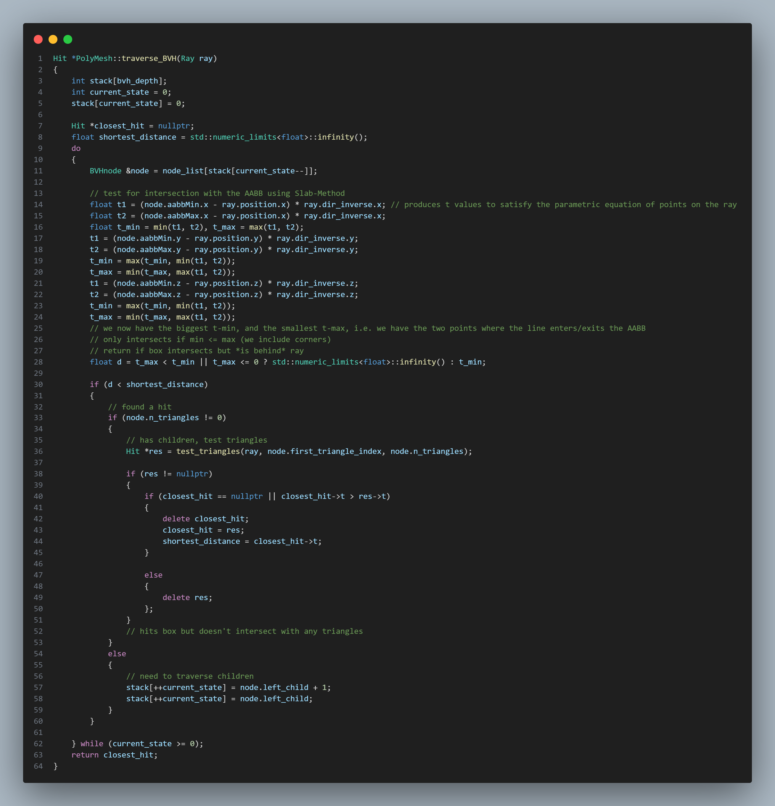
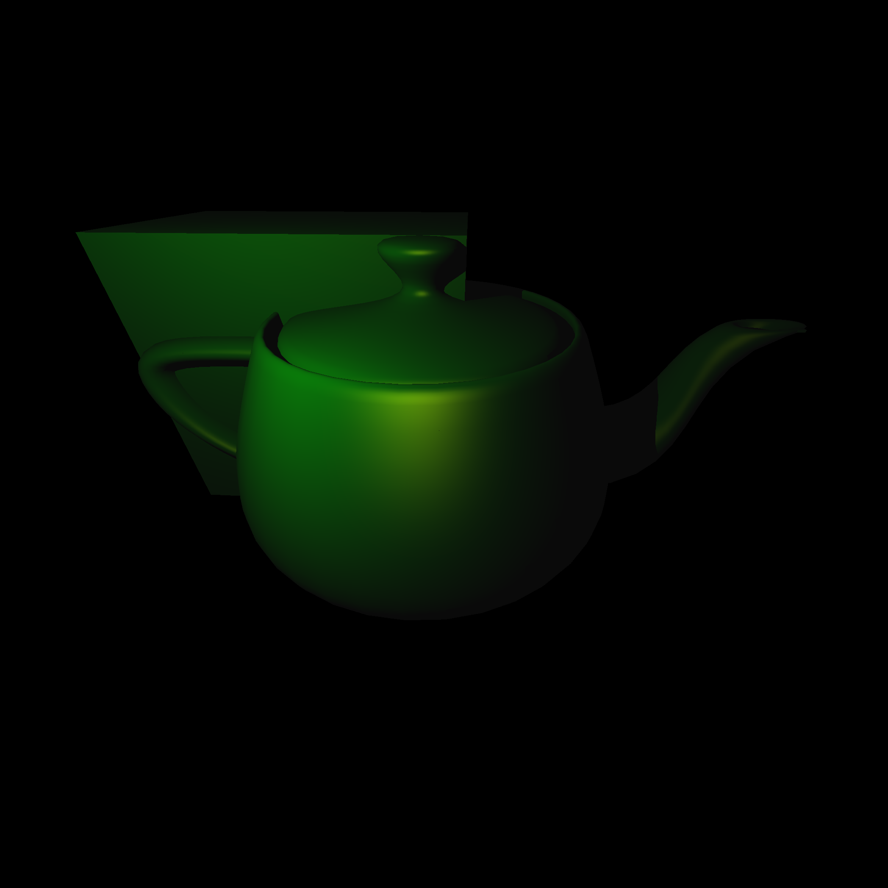

Integer Rasterisation
A graphics engine needs to be able to plot things onto the screen. To enable all of that, we need to support rasterisation.
In computer graphics, rasterisation is the task of taking an image described in a vector graphics format (shapes) and converting it into a raster image (a series of pixels, dots or lines, which, when displayed together, create the image which was represented via shapes).
Rasterisation can be implemented in a number of ways, the most obvious of which has you draw a line between two points, and then step between them from left to right by incrementing X by 1, for example. We can calculate the points' Y location by using the function of the line, and then determine whether that Y value is in the pixel above/below or right/left of the line.

The above implementation uses floats in the calculations, but when you're rending a big wiremesh there's thousands of lines, and many more calculations - integers are much more preferable. By working with the equations a little, multiplying out some denominators, we can work purely with integer maths. This is Bresenham's line algorithm.

Ray Tracing and intersection testing
Rasterisation is all well and good, but can't shine a light (pun intended...) on ray tracing and it's derivatives. The general idea - very general, as there are myriad different approaches, optimisations and algorithms that can vastly change the way all this is carried out - is that given a camera at a certain position in 3D space, you can send out rays from that origin, through the middle of a pixel on a virtual screen sat in front of the camera (think the virtual desktop screens in virtual reality) and out into the world. You can follow the path of this ray, using various linear algebra techniques to compute how that ray interacts with objects.

Most things in the scene are represented as mesh objects composed of triangles, mostly because triangles are always coplanar (all vertices lie in the same plane), and this enables one particular algorithm called the Möller–Trumbore intersection algorithm, which goes roughly as follows:
- Check first whether the ray actually intersects with the plane. The dot product can show how much two vectors share a direction. If it doesn't intersect, then we can move on.
- Start calculating the Barycentric coordinates of the intersection point of the ray in the plane. The general idea is that we move from the world-space coordinates, to triangle-space coordinates, where the origin is a vertex of the triangle and the basis vectors are the sides of the triangle. If the coefficients of the basis vectors in this new space are too large, or negative, we know the intersection lies outside the triangle.
- If the point lies in the triangle, use the Barycentric coordinates to interpolate normals or texture coordinates, as well as the length of the ray from origin to intersection. In this coordinate system its all relative to the vertices of the triangles, so this is all super computationally cheap.
Create the rays...

Trace them...

The result...

Phong Shading
Phong shading is a particular method of calculating the light intensity of points on an object. It turns out that pretty realistic lighting can be modelled simply by calculating a "diffuse" contribution, a "specular" contribution, and an "ambient" contribution.
More information can be found here , but to summarise:
- Ambient: This is used to emulate the residual quantity of light that is bouncing around the room, lighting up portions of objects that might otherwise be considered in shadow. This is constant. 
- Diffuse: This is used to emulate the which bits of the object are "basking in the light". With this in mind, it makes sense that the more perpendicular the objects face is to the rays from the light source, the stronger this aspect will be. Inversely, bits of the object tilting slightly, or completely away with have proportionally less diffuse light contribution. 
- Specular: This is used to emulate the "hot spot" on objects that is the result of the light rays bouncing off the objects surface and smacking straight into the back of our eyes. Approaching this intuitively again, it makes sense that we can calculate the specular contribution at points on the object by working out how closely the rays from the light source align with our angle of view after it's bounced of the object. 
It again makes sense that whilst ambient is constant, regardless of whether a point on an object is in shadow or not, specular and diffuse are not. They are conditional on the light hitting them directly (or indirectly, but this will come later) - we need to do a quick shadow check with a "shadow ray" before we bother calculating the specular and diffuse components.
Putting it all together...
Optimisation: Bounded Volume Hierarchies
Side note: this is easily my favourite portion of this project, as the techniques used for optimisation tie so many different pieces of theory together into something incredibly practical.
Up until this point, manually tracing width * height rays has been done by manually looping through all the triangles in the scene, object by object. A lot of time is spent shooting rays off into the background around the outside of the object, and we still have to do a number of checks proportional to the number of total triangles in the scene.
To reduce these checks, we can apply the concept of divide and conquer. We put boxes, aligned with the axis of the world-space, around each object. Then we recurse inwards, splitting that box down it's longest axis into two separate children and then assigning triangles into those children. We keep going until we have a binary tree of Axis-Aligned Boundary Boxes!
This algorithm uses only constant space by simply reorganising the triangles in our list. I'm aiming to use stacks and arrays where possible here as it's it facilitates optimisation with SIMD or offloading work onto the GPU. The technique of creating an ultimately flat structure within an array is beautiful:
Now when we come to intersect our ray with the scene, if it's around the border of the image where there's nothing but space, the first check against our teapots AABBs immediately shows that it's never going to hit anything, so we can move on. If it hits the volume on the other hand, we can recurse inwards, considering it's two children and checking for intersections there.
When we reach a child node, i.e. a node that actually contains some triangles, we loop through them as we did before, but this time we only have to check the triangles in that AABB, which is on average only a few.
Note that I'm again trying to use a iterative approach with a stack as opposed to recursion. We know the maximum depth of "recursion" (the max number of states we need to store at the same time) as we recorded it during construction.
There's also some low hanging fruit with regards to pruning the search a little early. If we have found an intersection in an AABB, and another box is strictly behind it (relative to the direction of the ray), then we know any intersections in that box will be further away from the one we've already found. That is, we don't need to look into that AABB. The distance from ray origin to closest intersection point on any AABB was actually calculated during the slab test, so this is an optimisation that includes basically no overhead outside of the check itself.
With all that said, for our teapot, we can examine one of the parent AABBs:
And all the "leaf" AABB's at the bottom of our BVH:

Thanks to this BVH implementation I can cast 4 million rays into a scene including 6000 triangles and have it render in about 5 seconds, and this is only the start.
To be continued...
This is an ongoing module. I'm currently working on cleaning up photon-mapping.